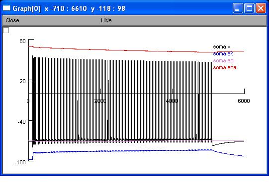
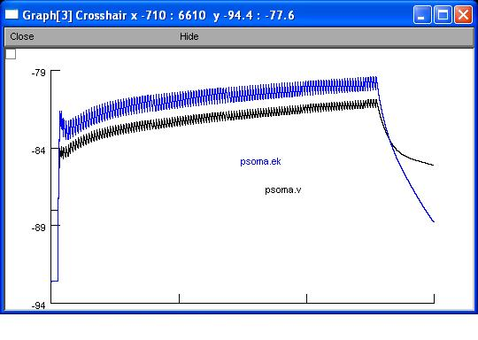

This is the readme for the model associated with the paper: G. G. Somjen, H. Kager, W. J. Wadman. (2008) Computer simulations of neuron-glia interactions mediated by ion flux. J Comput Neurosci DOI 10.1007/s10827-008-0083-9 Abstract: Extracellular potassium concentration, [K+]o, and intracellular calcium, [Ca2+]i, rise during neuron excitation, seizures and spreading depression. Astrocytes probably restrain the rise of K+ in a way that is only partly understood. To examine the effect of glial K+ uptake, we used a model neuron equipped with Na+, K+, Ca2+ and Cl− conductances, ion pumps and ion exchangers, surrounded by interstitial space and glia. The glial membrane was either "passive", incorporating only leak channels and an ion exchange pump, or it had rectifying K+ channels. We computed ion fluxes, concentration changes and osmotic volume changes. Increase of [K+]o stimulated the glial uptake by the glial 3Na/2K ion pump. The [K+]o flux through glial leak and rectifier channels was outward as long as the driving potential was outwardly directed, but it turned inward when rising [K+]o/[K+]i ratio reversed the driving potential. Adjustments of glial membrane parameters influenced the neuronal firing patterns, the length of paroxysmal afterdischarge and the ignition point of spreading depression. We conclude that voltage gated K+ currents can boost the effectiveness of the glial "potassium buffer" and that this buffer function is important even at moderate or low levels of excitation, but especially so in pathological states. ----------------------- The model files were supplied by the authors. Usage: Autolaunch from ModelDB or download the and expand the zip zip file. Then under Windows, run mknrndll and cd to the new folder and make the nrnmech.dll under MAC OS X, drag and drop the new folder onto the mknrndll icon, then drag the mosinit.hoc file onto nrngui, under linux, run "nrnivmodl" after cd'ing to the new folder, then type "nrngui mosinit.hoc". Once the simulation in the PointProcessManager window select Show -> Parameters and change the amp (nA) to 0.1675 In the RunControl window select "Init & Run". If you would like the simulation to finish faster click on Hide on the 6 Graph windows and then unhide them when the simulation time reaches 6000 (and stops). You can unhide them by selecting Window -> Graph[X] where X =0 to 5 in the NEURON Main Menu window. This will produce graphs similar to fig 3 in the paper, for example:  and 